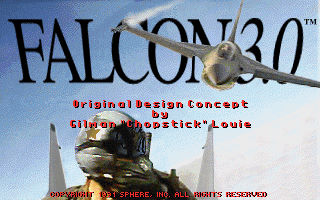
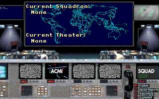
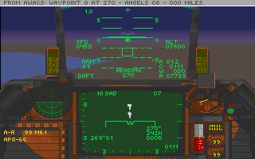
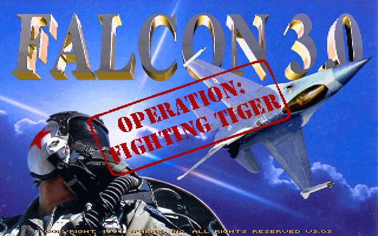

名稱：捍衛雄鷹3.0 (Falcon 3.0，英文版)
簡介：Sphere 1991年出品的飛行戰鬥模擬遊戲，由Spectrum HoloByte代理發行，台灣則由
智冠代理進口。1992年推出「戰虎行動（Operation Fighting Tiger）」資料片，由
第三波代理進口。1993年分別推出「致命殺手米格29（MiG-29: Deadly Adversary of
Falcon 3.0）」與「大黃蜂：海軍攻擊戰鬥機（Hornet: Naval Strike Fighter）」
資料片 [待補]。




備註：本版含所有資料片。要玩主程式請執行PLAY.BAT；要玩米格29，請執行PLAY2.BAT；要
玩大黃蜂，請執行PLAY3.BAT。
保護：無
備註：DosBox安裝主程式時，若出現"Boot clean system disk"訊息，請更換版本看看，如
0.74版，或SVN版。
備註：安裝完米格29資料片，會自動將主程式和戰虎行動資料片升至3.02版（或3.02.1版）。
備註：安裝完大黃蜂資料片，會自動將主程式和戰虎行動資料片升至3.03版，米格29資料片
升至1.02版（遊戲版本可執行CHECKVER.EXE得知）。